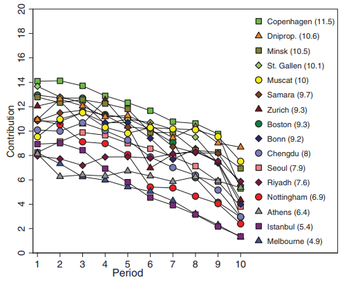
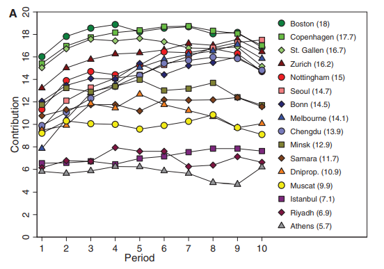
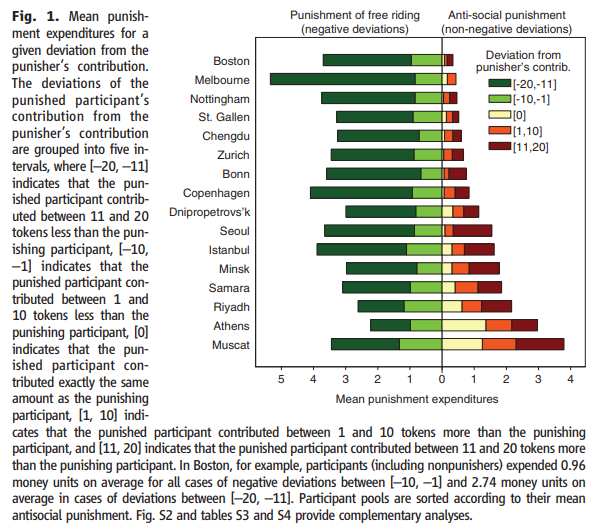

There's a trope among Slovak intellectual elite depicting an average Slovak as living in a village, sitting a local pub, drinking Borovička, criticizing everyone and everything but not willing to lift a finger to improve things. Moreover, it is assumed that if you actually tried to make things better, said individual would throw dirt at you and place obstacles in your way.
I always assumed that this caricature was silly. It was partly because I have a soft spot for Slovak rural life but mainly because such behavior makes absolutely no sense from game-theoretical point of view. If a do-gooder is stupid enough to try to altruistically improve your life, why go into trouble of actively opposing them? Why not just sit safely hidden in the pub, drink some more Borovička and wait until they are done?
Well, it turns out that the things are far more complex then I though.
Benedikt Herrmann, Christian Thöni and Simon Gächter did a study of how people from different societies deal with cooperation and punishment. You can find the paper here and supporting material here.
The study is based on the "public goods" game. The game works as follows:
There are four players. Each player gets 20 tokens to start with. Every participant either keeps them or passes some of them into a common pool. After all the players are done with their moves, each of them, irrespective of how much they contributed, gets tokens equal to 40% of all the tokens in the common pool. The participants cannot communicate with each other and are unaware of each other's identities. The game is repeated, with the same players, 10 times in a row.
The earnings, obviously, depend not only on subject's move but also on the willingness of the other players to cooperate and put tokens into the common pool. But free riders get an advantage. They keep their original tokens but also get their share from the pool.
To get a feeling of the payoffs, let's have a look at the single-round earnings in the extreme case where each participant either puts all their tokens into the pool ("cooperator") or keeps all the tokens for themselves ("free-rider"):
No. of free-riders
Earning of a cooperator
Earnings of a free-rider
0
32
n/a
1
24
44
2
16
36
3
8
28
4
n/a
20
There's a variant of the "public goods game" where players are able to punish each other after each round of the game. The mechanism is simple. When the round ends the participants are informed about how much each of them has put into the common pool. Then they decide whether to spend some of their tokens to administer punishment. For each token spent on punishment you can subtract 3 tokens from the earnings of an opponent. The players know that they've been punished but they are not informed about who exactly has punished them.
The researchers were interested in comparing the results of the game among different societies:
Our research strategy was to conduct the experiments with comparable social groups from complex developed societies with the widest possible range of cultural and economic backgrounds to maximize chances of observing cross-societal differences in punishment and cooperation. The societies represented in our participant pools diverge strongly according to several widely used criteria developed by social scientists in order to characterize societies. This variation, covering a large range of the worldwide available values of the respective criteria, provides us with a novel test for seeing whether societal differences between complex societies have any impact on experimentally observable disparities in cooperation and punishment behavior. … To minimize sociodemographic variability, we conducted all experiments with university undergraduates who were similar in age, shared an (upper) middle class background, and usually did not know each other.
Specifically, the experiment was conducted at the following places:
The results from this experiment are exactly as you would expect. The cooperators found out that there was no way to prevent free-riding and the amount of resources they've put into the common pool steadily decreased. This result replicated across different participant pools. Particular pool may have started with a high or low cooperative behavior, but as the time went on the cooperation always decreased.

Ability to punish free-riders increased the cooperative behavior in most participant pools. Free-riders learned that free-riding doesn't pay off and started contributing to the common pool.

However, introduction of punishment had no effect in some of the pools. The contributions stayed more or less the same throughout the experiment in Minsk, Samara, Dnipropetrovsk, Muscat, Instanbul, Riyadh and Athens.
Now that's an interesting result. What's going on there? Are members of some societies resistant to punishment or what?
The reality turns up to be even more interesting than one would expect.
Herrmann, Thöni and Gächter found out that participants in some societies were engaging in what they've called "anti-social punishment". They were punishing cooperators!
In fact, they were punishing cooperators so much that the cooperation-enhancing effect of pro-social punishment was entirely canceled.
To make it even more confusing, the anti-social punishment, unlike the pro-social punishment which had roughly similar level in all the participant pools, differed widely among the pools. While it was almost non-existent in the West, it was common in Eastern Europe, in Middle East and in Greece.

The authors then try to find out which aspects of the society are correlated with the high anti-social punishment rate:
With respect to antisocial punishment, we found that both norms of civic cooperation and rule of law are significantly negatively correlated with punishment (at P < 0.05). In other words, antisocial punishment is harsher in participant pools from societies with weak norms of civic cooperation and a weak rule of law. Additional analyses show that antisocial punishment also varies highly significantly with a variety of indicators developed by social scientists in order to characterize societies. Thus, the extent of antisocial punishment is most likely affected by the wider societal background.
I wouldn't have much to add to the fascinating results above, I am not a sociologist after all, but I happen to come from a country that is probably affected by this problem. Slovakia hasn't participated in the study, however, it's a former Ostblock country and as such it is very likely to have results similar to Ukraine, Russia or Belarus. Moreover, local folk wisdom, as already mentioned, has it that the phenomenon does really exist. Therefore, having all the relevant context and all the intricacies of the local culture in my head, I should be able to come up with an psychologically plausible explanation of why it would make sense to punish cooperators. It was hard to empathize with someone I disagree with on a very fundamental level, to put myself in their shoes, but I think I've succeeded and what follows is what I came up with.
Herrmann, Thöni and Gächter speculate that the anti-social punishment may be a form of revenge. You've punished me for free-riding so now I'll punish you just that you know how it feels! And given that I don't know who the punisher was, I'll punish all the cooperators who were likely to administer the original punishment in the first place.
While that, I believe, is a part of the equation, the psychology of anti-social punishment may be somehow more nuanced. Let me give you an extremely simplified toy example, just to get grip of what may be going on.
When I came to Caracas, the first thing I've done was to buy a cup of coffee from a street vendor. The coffee was very good but when I drank it I was left with an empty plastic cup. I've carried the cup with me for several hours looking for a trash bin. I haven't found one. Finally, I threw the cup at one of the piles of trash that were heaped against the walls everywhere. If, at that point, someone chastised me for littering I would be extremely angry and I would yell at that person. In other words, I would administer counter-punishment.
Psychologically, I would be angry because, apparently, everyone else was littering but it was just me who was picked for the punished. It would be unjust. Also, there were no trash bins so I couldn't had behave even if I wanted to. That doubles the injustice. Moreover, I was carrying the cup for hours, you do-gooder moron!
If I was a local there may have been an additional reason to overreact: I would probably be subliminally angry for having to live among the trash all along. This would be a great opportunity to let some of that steam off!
To get back to Eastern Europe, we've used to live under communist regime where all the common causes were appropriated by the state. Any gains from a contribution to a common cause would silently disappear somewhere in the dark corners of the bureaucracy.
Quite the opposite: People felt justified to take stuff from the commons. We even had a saying: "If you don't steal [from the common property] you are stealing from your family."
At the same time, stealing from the state was, legally, a crime apart and it was ranked in severity somewhere in the vicinity of murder. You could get ten years in jail if they've caught you.
Unsurprisingly, in such an environment, reporting to authorities (i.e. "pro-social punishment") was regarded as highly unjust — remember the coffee cup example! — and anti-social and there was a strict taboo against it. Ratting often resulted in social ostracism (i.e. "anti-social punishment"). We can still witness that state of affairs in the highly offensive words used to refer to the informers: "udavač", "donášač", "práskač", "špicel", "fízel" (roughly: "nark", "rat", "snoop", "stool pigeon").
I also remember how, when I moved to Switzerland, a lot of my friends said things like: "I've heard that Swiss will rat on you at any occasion."
Swiss people would not understand. What's so bad about punishing free-riders after all?
September 27th, 2018